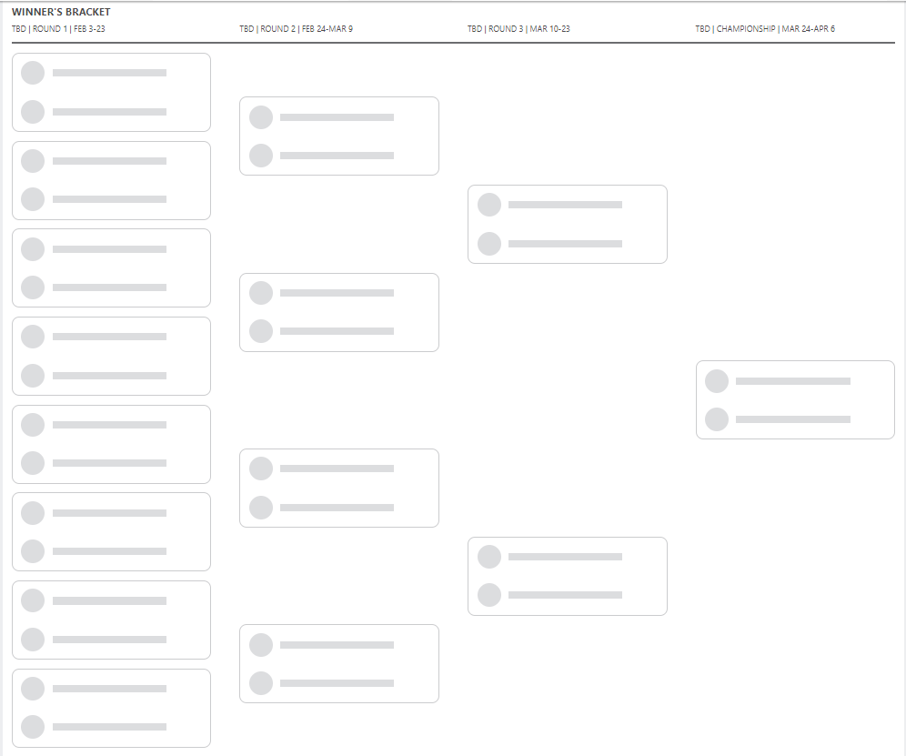

SEZONA 24/25
- Pravila in sistem tekmovanja
- Matchup1 (Oct 22 - Oct 27)
- Matchup2 (Oct 28 - Nov 3)
- Matchup3 (Nov 4 - Nov 10)
- Matchup4 (Nov 11 - Nov 17)
- Matchup5 (Nov 18 - Nov 24)
- Matchup6 (Nov 25 - Dec 1)
- Matchup7 (Dec 2 - Dec 8)
- Matchup8 (Dec 9 - Dec 15)
- Matchup9 (Dec 16 - Dec 22)
- Matchup10 (Dec 23 - Jan 29)
- Matchup11 (Dec 30 - Jan 5)
- Matchup12 (Jan 6 - Jan 12)
- Matchup13 (Jan 13 - Jan 19)
- Matchup14 (Jan 20 - Feb 26)
- Matchup15 (Jan 27 - Feb 2)
- Play-in (Feb 3 - Feb 23)
- Playoff 1 (Feb 24 - Mar 9)
- Playoff 2 (Mar 10 - Mar 23)
- Playoff 3 (Mar 24 - Apr 6)
2024/25 - Fantasy Koroška - sezona 8
PLAY-IN (Feb 3 - Feb 23)
Poročilo kroga
Zaključena je uvodna runda končnice, maratonski trije tedni, ko so nekateri počivali, nekateri se borijo za 15. mesto, tisti glavni del pa je postregel s petimi blowouti in ….
Enim izenačenjem.
V glavnem avspuharskem obračunu tedna sta se pomerila sicer visoko uvrščeni a močno zdesetkani Herko in pa pred sezono prvi favorit za Gajbo, ki pa je zdaj preskočil že 2 staga
in se uvrstil celo v četrtfinale – Tajn. Slednji bi proti prav vsem ostalim morebitnim nasprotnikom lahko puško vrgel v koruzo že prvi torek v matchupu, a so mu
bogovi Fantasyja izgleda prepisali vso bratovo srečo prvega dela sezone, ko je se je imel možnost pomeriti z Alpakami. Slednje so gotovo vsaj zelo visoko na lestvici
največ O-jev skozi matchup, če že ne prav na vrhu, v teh treh tednih so jih namreč zabeležili reci piši 45! Štetje sicer ni bilo lahko in morda ni bilo povsem natančno,
ampak dobite predstavo kako je ta obračun potekal. V tem obračunu pričakujemo vsaj stotico Donkeja v dvoboju z Dallasom in videli bomo, ali lahko zacopra tudi Urnautove
Koze, brez neke črne magije namreč Tinki Binki pravih možnosti nima.
Hitro je stvari na svoje mesto postavil Maher in upravičil vlogo favorita. Ni sicer prinesel prediction pointsov za najvišji score, a vendarle je zabeležil rutinirano zmago, ki razen
2-3 dni pred allstar breakom ni bila nikoli pod resnim vprašajem. Čeprav je v tem tednu izgubil đankija Portisa, ga stavnice še vseeno uvrščajo v rahlo prednost pred
Koalami, ki so njegov naslednji nasprotnik. Kaj na drugi strani reči za Damjana? Solidna sezona s kar nekaj poškodbami (predvsem Banchero in OFS Murray sta krojila
razplet nekaterih matchupov), pa je vendarle dobro služila za spoznavanje z ligo in sistemom tekmovanja in verjamemo, da se bo Dili v svoj sophomore season vrnil
močnejši in nevarnejši za visoke uvrstitve. Za debitantsko sezono pa je zagrenil nekaj življenj in jo lahko še vedno sklene skozi consolation bracket v deseterici.
476 točk. Kakšen plonk-listič je Nikola Jokič, to je neverjetno. Prvi pick najbrž še nikoli odkar obstaja liga ni bil tako valuable kot letos, ko nori Srbski debeluhar v povprečju nosi
kar 61.6 točke. S takšnim kalibrom in potem še norim Cadom Cunninghamom je Verčko vsekakor v poziciji, da premaga prav vsakega nasprotnika. Seveda Maher ne bo mačji
kašelj, kot je to bil Kups, ki ni imel pravih možnosti za presenečenje, ampak Verčko je pripravljen, da se uvrsti dlje kot Jurhar in nam vsem zrihta zadoščenje ob
gledanju socialnih omrežij in Jurharjevih storyjev. Kaj bi rekli za Kupsa, nič posebnega, enostavno tokrat ni bil konkurenčen močnim Koalam, ni bilo niti nekih
pretiranih izostankov, ki bi lahko služili kot izgovor … Kakorkoli, Kups je izkušen manager, z nami že od prve sezone in prepričani smo, da bo prihodnje leto
ponovno napadal najvišja mesta v redemption seasonu.
Vedno višji pa so apetiti Vida Urnauta, ki se mu roko na srce odpira pot proti vsaj polfinalu. Po tem ko je bolnišnico, ki ji je v svoji rookie sezoni poveljeval primarij Vito Torej,
brez pravih težav odpravil v play-in rundi, je zdaj za nameček dobil še z naskokom najlažjega nasprotnika v četrtfinalu, ko mu bo nasproti stal Tine. S tem se enemu
izmed dveh managerjev, ki sta presegla magično mejo 3000 točk res nasmiha polfinale, kar bi predstavljalo šele drugo polfinale za Vida v zgodovini. Maščevala se je
tvegana strategija z mnogimi steklenkoni Vitu, ki so ga AD, Bajsi in ostali igralci s koreninami iz Rogaške Slatine pustili na cedilu in tako ni imel pravih možnosti.
Rookie sezono bo tako sklenil podobno kot Ilja, v bitki za mesta med 9-14. Starešine tako niso dopustile, da bi se kdo od novincev že v krstni sezoni boril za naslov.
Karma je prasica in ko te udari nazaj po navadi zelo boli. Nobena izjema ni niti ta primer, ko je večno flejmani Embiid celo zbral nekaj zaporednih nastopov proti svojemu največjemu
kritiku Kavtu in tako pridno zabijal žeblje v njegovo krsto. Roko na srce, tudi če bi si vzel pavzo to ne bi prav dosti pomagalo prvi goflji Brdinj, ki je po norem
uvodu v sezono in 7. zaporednih zmagah kar nekako izgubil identiteto, z njo pa tudi kar 8 od 9 matchupov. SGA je resnično izjemen, človek je zbral kar 180 točk več
od naslednjega Krapa, a enostavno ni zmogel sam resno parirati razpoloženim Kobram. Lanski prvak tako ostaja v igri za titulo, a zdaj ga po zmagi nad najbolj 1-man
army moštvom čaka najbrž celo najbolj uravnoteženo in izenačeno moštvo – Veseli Vesoljčki.
Za konec pa smo si kakopak pustili poslastico – Slovenjgraški derbi med Gepsom in Jurharjem. Ob 6h zjutraj se je igrala zadnja tekma tedna, kjer je imel Geps 2 varovanca in dobre 4 minute
pred koncem zaostajal 20 točk. Usoda je hotela, da sta JDub in McDaniels zmogla natanko 20 točk in prvič v zgodovini lige je bil rezultat izenačen. Ob tem je pomembno
poudariti, da je šlo za najdaljši možen matchup, ki je trajal kar 3 tedne, kar naredi ta poraz še bolj boleč. Napredovanje je tako pripadlo Fredu in njegovim Ježkom,
ki so se zaradi boljše uvrstitve v rednem delu – kjer je odločal krog kar 6 ekip in sta se oba udeleženca znašla eden poleg drugega – na 8. in 9. mestu – uvrstili naprej.
Kot smo že vajeni je edini B2B winner v zgodovini lige po navadi v času playoffa prisiljen redno menjavati gate in nič drugače ni niti letos … zdaj ga namreč čakajo Wembyless
Tigri in nikakor ni brez možnosti, Jolzo celo vlogo favorita pripisuje zdravim Ježkom.
V tekmovanje se vračata Jole, ki je kot že rečeno v tem času, ko je počival utrpel tudi najhujšo možno izgubo in se od vloge prvega favorita poslavlja, a nikakor ne meče puške v koruzo,
kot tudi Dušan. Slednji bo svoje Vesoljčke poskušal popeljati v prvi polfinale sploh, saj njegove visoke uvrstitve segajo v davno sezono 2019/20, ko tekmovanje še ni
potekalo po H2H sistemu.
Obetajo se izjemno zanimivi obračuni in komaj že čakamo, da se boji razplamtijo v prihodnjih dneh. Srečno vsem razen Jurharju in naj zmaga … en ko mi ne gre na kurac.